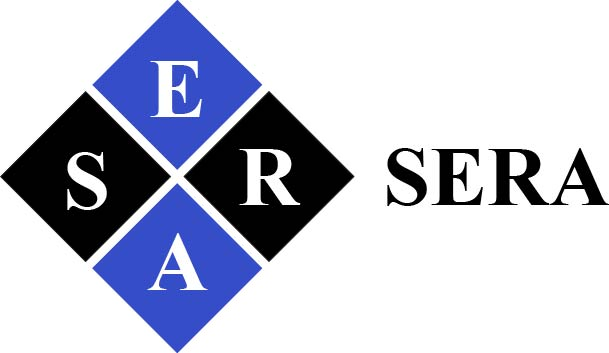

Johnson
J. Jasson
Electrical & Electronics Engineer · Mathematics · |
Building intelligent systems at the intersection of hardware, mathematics, and AI.
Electrical & Electronics Engineer · Mathematics · |
Building intelligent systems at the intersection of hardware, mathematics, and AI.
I'm a first-generation college student and Presidential Scholar at Alfred University, pursuing a Bachelor of Science in Electrical and Electronics Engineering with a double major in Mathematics .
I am also a Co-Founder of SERA , an EdTech company focused on expanding education, career opportunity, mentorship, and resource accessibility for students in Tanzania and across Africa.
My interests sit at the intersection of hardware engineering, software, mathematics, and artificial intelligence. I enjoy building systems that are not only functional, but intelligent, measurable, and capable of solving real-world engineering problems.
I work across machine learning, artificial intelligence, semiconductor research, embedded systems, and computational engineering, from studying electronic behavior in semiconductor materials to developing AI-driven digital twins and ESP32-based embedded systems.
Beyond academics, I lead as President of the NSBE Chapter and Vice President of ColorStack at Alfred University, helping expand access to engineering opportunities, professional development, mentorship, and technical careers.
Double Major in Mathematics. Presidential Scholar, Dean's List Fall 2025, GPA 4.00/4.00.
Selected for Break Through Tech's intensive, project-based artificial intelligence program focused on applied machine learning and technical development.
Developed and evaluated models spanning logistic regression, K-Nearest Neighbors, deep neural networks, and NLP-based applications while working through exploratory data analysis, feature engineering, model training, evaluation, and interpretation.
Capstone: Developed a machine learning model to classify Airbnb listing price categories from location, amenities, bed count, neighborhood, and host attributes.
Developed proficiency in Python while studying core data structures and algorithms including arrays, linked lists, trees, recursion, searching, sorting, and complexity analysis.
Developed practical skills in structured problem-solving, leadership, communication, adaptability, and digital transformation.
Launched and led the campus chapter, building a supportive platform for engineering students to develop professionally, discover opportunities, and strengthen their technical community.

Student Empowerment & Resource Access · EdTech · Tanzania
SERA is an EdTech platform I co-founded to help Tanzanian students discover scholarships, fellowships, internships, competitions, mentorship, and career-development opportunities.
The platform is designed to make opportunities easier to understand by showing eligibility, deadlines, requirements, and application guidance clearly.
Our long-term vision is to connect emerging African talent with global education, technology, funding, mentorship, research, and industrial opportunities.
Alfred University · Renewable Microgrids
Developed an AI-driven digital twin using Convolutional Neural Networks to predict battery State of Health and State of Charge. Investigated intelligent Battery Management Systems for improving performance, forecasting degradation, and supporting renewable-energy microgrid applications.
Alfred University · Aug 2025 – Dec 2025
Benchmarked multiple machine-learning models for battery State of Health prediction. Compared model performance using predictive error metrics and analyzed battery degradation across charge-discharge cycles.
Personal Embedded Systems Project
Developed an event-driven ESP32 embedded system using ESP-IDF and FreeRTOS. Integrated sensor monitoring, GPIO interrupts, event queues, timestamped event logging, and non-blocking firmware architecture for edge sensing applications.
Personal Project · Dec 2025
Designed and built an ESP32-based Wi-Fi smart switch enabling remote ON/OFF device control from a mobile device. Implemented embedded firmware in C/C++ and hosted an HTTP server to translate network requests into real-time hardware output.
Knepp Lab, Alfred University · Jan 2026 – Present
Investigating how temperature influences electronic coupling in organic semiconductors using computational modeling and the quasi-harmonic approximation. Research uses high-performance computing environments and computational-materials tools to study semiconductor behavior.
STEP-LAB, Alfred University · Sep 2025 – Present
Contributed to an engineering project replacing a combustion powertrain with an electric drivetrain. Supported prototype design, component development, system integration, and engineering analysis.
Forage · Nov 2025 – Dec 2025
Applied electrical-distribution planning, AutoCAD, circuit-breaker selection, and aerospace engineering standards within a simulated electrical engineering environment.
I'm actively seeking internship opportunities, engineering collaborations, research opportunities, hackathons, and technically challenging projects. If you have an opportunity, project, or idea worth building, feel free to reach out.